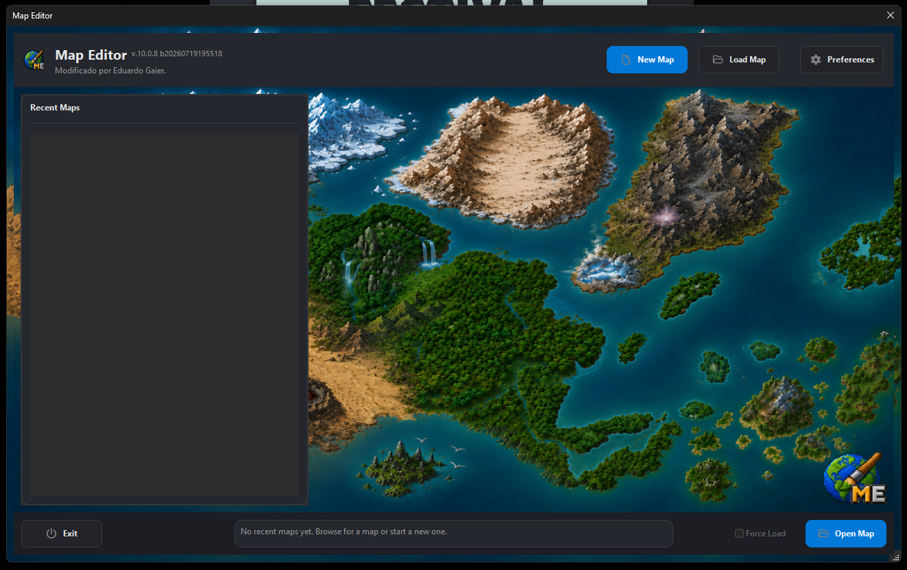

Interface otimizada
Layout circular, janelas mais bonitas e diversos temas de cores para personalizar a interface enquanto trabalha no mapa.

RME personalizado
Esta página é a vitrine do meu RME. A ideia é vender uma versão com recursos visuais, presets, scripts e ajustes pensados para ganhar tempo durante a criação de mapas.
Destaques
A base foi modificada para otimizar o fluxo de trabalho, aceitar funções em Lua, rodar scripts personalizados, corrigir bugs e manter projetos, clientes, OTBs e configurações em uma estrutura mais limpa.
Layout circular, janelas mais bonitas e diversos temas de cores para personalizar a interface enquanto trabalha no mapa.
Interface auxiliar para registrar bordas, grounds e doodads com poucos cliques, além de suporte para editar tilesets.
Gera montanhas com camadas e itens de forma aleatória ou usando modelos predefinidos, acelerando a criação de relevos.
Área para salvar suas configurações como presets e reutilizar padrões de trabalho em outros mapas ou partes do projeto.
Gerador de dungeons ainda em beta, mas funcional, criado para ajudar na montagem de áreas internas e estruturas exploráveis.
Escaneia itens de uma área e consegue aplicar em outra de forma aleatória, otimizando o tempo em decorações e preenchimentos.
O salvamento de clientes e OTB foi reorganizado: cada projeto fica em uma pasta própria com mapa, OTB, brushes e arquivos de configuração.
O RME recebe melhorias frequentes. Após adquirir, você terá acesso gratuito às atualizações, incluindo recursos futuros como City Generator.
Um script registra o tempo gasto no projeto, ajudando a acompanhar produção, ritmo de trabalho e evolução de cada mapa.
Exposição
Navegue pelas setas e clique em uma imagem para visualizar em tamanho maior.
Venda do RME
Entre em contato para tirar dúvidas sobre recursos, valores e disponibilidade do RME personalizado.